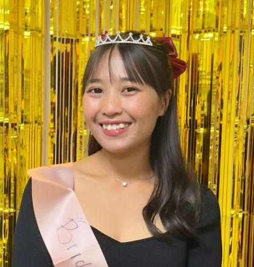

بِسْمِ اللَّهِ الرَّحْمَٰنِ الرَّحِيمِ
"Dan di antara tanda-tanda kekuasaan-Nya ialah Dia menciptakan untukmu pasangan hidup dari jenismu sendiri, supaya kamu cenderung dan merasa tenteram kepadanya, dan dijadikan-Nya di antaramu rasa kasih dan sayang."
QS. Ar-Rum : 21
Dengan penuh syukur kepada Allah SWT, kami bermaksud menyelenggarakan pernikahan putra putri kami, dan mengundang Bapak/Ibu/Saudara/i untuk hadir memberikan doa restu.
Kedua Mempelai
Mempelai
Didi Sahkandi, S.T
Putra Ke-empat dari 4 Bersaudara
Islam
Ayahanda : Bapak Tarudin
Ibunda : Ibu Asma Wati

Ns. Ririn Noviani, S.Kep
Putri Pertama dari 2 Bersaudara
Islam
Ayahanda : Bapak Ngadi
Ibunda : Ibu Purwanti
Kisah Kami
Perjalanan Cinta
2013
Berkenalan pada masa perkuliahan, awal dari kisah yang tak pernah disangka akan membawa kami sejauh ini.
2013 — 2026
Menjalin hubungan baik selama 13 tahun. Dari waktu ke waktu kami belajar arti cinta, saling memahami, dan makin kompak tumbuh bersama. Melewati bab-bab cerita suka maupun duka bersama.
2022 — 2026
Menjalin hubungan jarak jauh Indonesia-Jepang selama 4 tahun tdak lah mudah. Namun, dengan keadaan itu justru semakin menguatkan dan meyakinkan kita untuk melaju ke arah yang lebih serius.
Februari 2026
Di Jepang, kami memutuskan mengikat jalinan kasih kita dengan bertunangan, sebagai langkah awal menuju kehidupan baru.
November 2026
Sekembalinya dari Jepang, kami memutuskan untuk melangkah lebih jauh dan menikah.
"Dan segala sesuatu Kami ciptakan berpasang-pasangan supaya kamu mengingat kebesaran Allah."
QS. Adz-Dzariyat : 49
Save The Date
Akad & Resepsi
Menuju Hari Bahagia
Akad Nikah
Minggu, 29 November 2026
08:30 WIB — 10.00 WIB
Rumah Mempelai Wanita
Jl. Pasar Berdikari, 05/20, Kijang Kota,
Bintan Timur, Bintan, Kepri
Disiarkan langsung di TikTok @rinnovqu
Resepsi
Minggu, 29 November 2026
11:00 WIB — Selesai
Rumah Mempelai Wanita
Jl. Pasar Berdikari, 05/20, Kijang Kota,
Bintan Timur, Bintan, Kepri
Live Akad di TikTok
@rinnovqu
Bagi keluarga & sahabat yang berhalangan hadir, saksikan momen sakral akad nikah kami secara langsung pada Minggu, 29 November 2026 pukul 08:30 WIB.
Tonton Live di TikTokFollow akun @rinnovqu agar mendapat notifikasi saat live dimulai
Our Moments
Galeri Prewedding
Ketuk foto untuk memperbesar
Wedding Gift
Tanda Kasih
Doa restu Bapak/Ibu/Saudara/i merupakan karunia yang sangat berarti bagi kami. Jika berkenan memberi tanda kasih, kami sediakan pilihan berikut tanpa mengurangi rasa hormat kami.
Card Holder
Didi Sahkandi
Card Holder
Ns. Ririn Noviani
RSVP
Ucapan & Doa
Memuat ucapan...
Terima Kasih
Merupakan suatu kehormatan dan kebahagiaan bagi kami apabila Bapak/Ibu/Saudara/i berkenan hadir dan memberikan doa restu kepada kami.
Kami yang berbahagia,